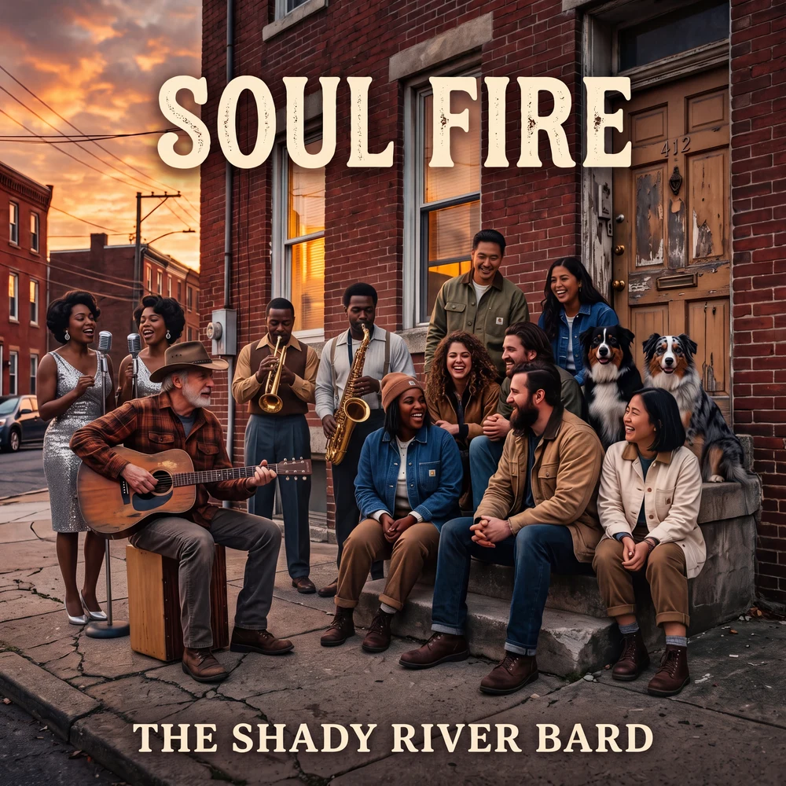

SOUL FIRE
A Working-Class Soul Cantata of Affective Polarization and Civic Resurrection
When the physical union halls and corner barbershops were padlocked, they were replaced by digital feeds engineered to turn neighbors into mortal enemies. Drawing from the historic interracial brotherhood of Stax Records and Muscle Shoals, Soul Fire confronts the algorithmic extraction of human despair—and proves that the friction of human proximity is the only force capable of reigniting the democratic flame.

The Three Sociological Pillars
Soul Fire is grounded in empirical sociology, examining how the loss of physical community infrastructure directly accelerates affective political hatred.
Erosion of the Social Contract & Affective Polarization
Affective polarization occurs when partisans do not merely disagree on tax policy, but evaluate members of the opposing group as morally bankrupt, untrustworthy, and an existential threat to the nation. This animosity is systematically monetized by engagement algorithms that harvest working-class fatigue into horizontal hostility.
The Erasure of "Third Places" & Architecture of Isolation
Ray Oldenburg identified "Third Places"—cafes, diners, union halls, and barbershops—as essential public anchors where regular, informal, and neutral conversation occurs. When suburban zoning and economic consolidation erased these spaces, citizens were driven into isolated domestic quarters where the only window to the community is an algorithmic screen.
The Stax/Motown Ethos as a Counter-Narrative
During the height of racial segregation, Stax Records in South Memphis and Muscle Shoals in Alabama brought Black and white working-class musicians together in a single room. Soul music is an exercise in polyrhythmic democracy: each musician locks into the pocket, proving that physical friction and creative proximity produce radiant warmth instead of division.
The 4-Act Storyline Matrix
From the digital isolation of the smartphone shift to the joyous reclamation of the stoop, follow the 15-track emotional and sociological arc.
The Algorithmic Factory
The uncompensated second shift: staring into the blue glow, trading blood for digital dimes, trapped in echo silos that manufacture hostility.
The Rust and the Rubble
Padlocks on the union hall and the empty chair at the barbershop. Neighbors sharing the same economic hardship view each other as hostile strangers.
The Spark of Recognition
Turning off the screen and walking outside. Looking a neighbor in the eye. Like analog tape saturation pushed to the red, proximity produces healing warmth.
Grassroots Civic Resurrection
The stoop congregation gathers. A corner lot prophet speaks truth to cynicism. Hand by hand, brick by brick, the Soul Fire is rekindled across the city.
Interactive Jukebox & Lyrics Vault
Select any of the 15 master tracks to stream the recording, explore decorated instrumentation notes, and read verified lyrics.
01. The Ghost on the Assembly Line
Narrative Summary
The Ghost on the Assembly Line introduces the protagonist staring at a smartphone after a grueling shift, highlighting the death of the American Dream. The song establishes the baseline reality of the modern worker who is suffocating under affective polarization.
Musical Motif
A tense, ticking hi-hat and a repetitive, rigid Wurlitzer riff mimicking the unfeeling machinery of modern labor.
Lyrics & Arrangement
✓ Copied!The Musical North Star
A deliberate reclamation of analog warmth, rhythm-section polyphony, and gospel-soul call-and-response engineered to dismantle ideological alienation through the power of the groove.
Polyphony in the Pocket
Modeled after James Jamerson (Motown) and Duck Dunn (Stax). Basslines operate deep in the pocket with melodic 16th-note syncopation, locked to unhurried, heavy-hitting drums in the tradition of Al Jackson Jr.
Memphis Horns & B3
Warm, analog keyboard textures (Wurlitzer 200A and roaring Leslie-cabinet Hammond B3) form the harmonic bedrock, punctuated by punchy, staccato brass fanfares modeled after the FAME Gang and Memphis Horns.
Call, Response & Lead
Lead vocals alternate between a grounded, conversational male baritone (storyteller precision) and a soaring, powerhouse female rock-soul vocalist (gospel-infused moral authority), united in choral democracy.
Analog Tape Saturation
Rejecting sterile digital perfection, the recording embraces magnetic tape pushed into the red: subtle harmonic distortion and bass bloom mirroring the truth that human friction creates warmth.